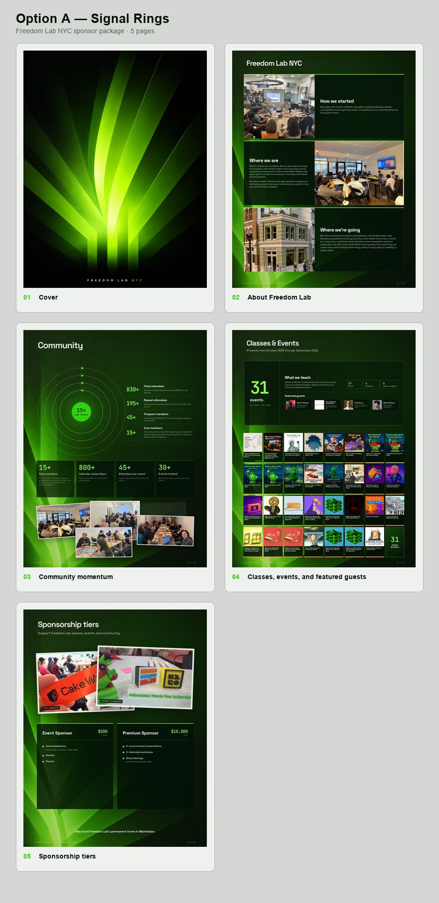
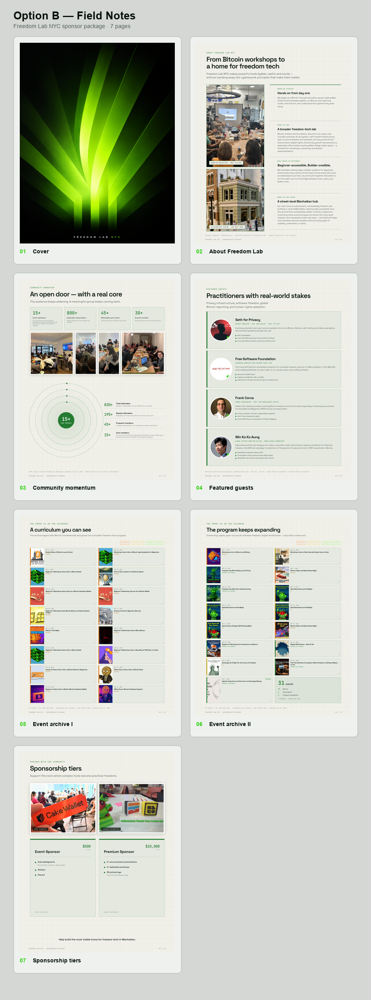
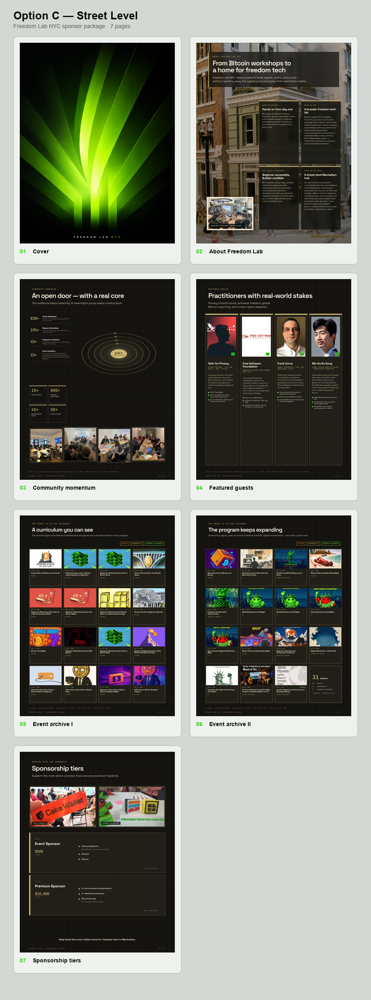
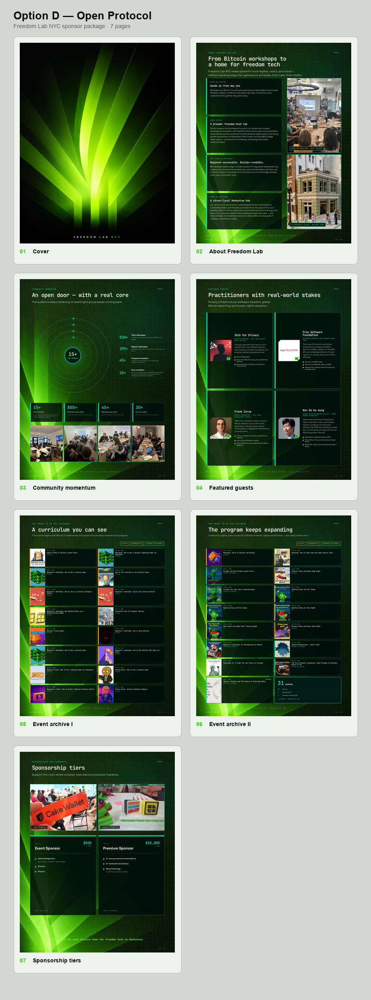

Option A
Signal Rings
Cinematic and human, with concentric community signals and a compact square-image grid of all 31 events.
Open full deckEvery route contains the same story, verified guest profiles, 31-event archive, existing community photography, and sponsorship tiers. Signal Rings now integrates guests into Classes & Events and compresses the complete event archive into one half-page grid.

Cinematic and human, with concentric community signals and a compact square-image grid of all 31 events.
Open full deck
A light editorial documentary: warm paper, timeline storytelling, round portraits, and an archive that reads like a program ledger.
Open full deck
Architectural and ambitious, treating the building vision, speakers, events, and sponsor tiers as parts of a Manhattan institution.
Open full deck
A dense cypherpunk system: modular story blocks, network orbits, technical guest nodes, and terminal-like event records.
Open full deckConcept routes are intentionally noindex and isolated from the current three-page package until one direction is selected.